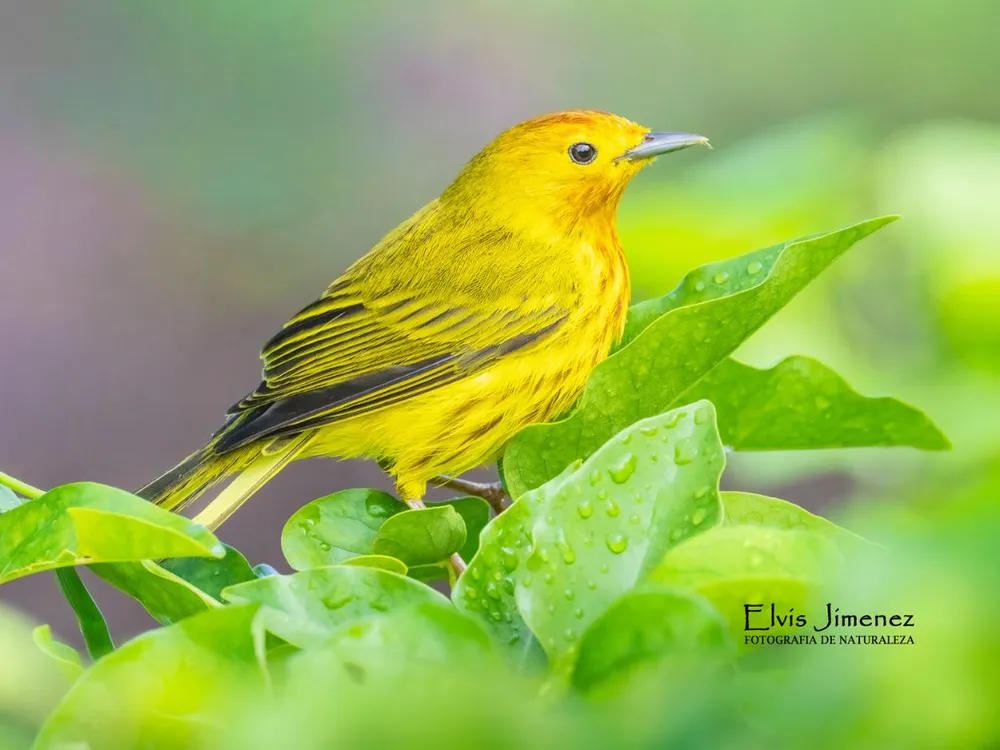
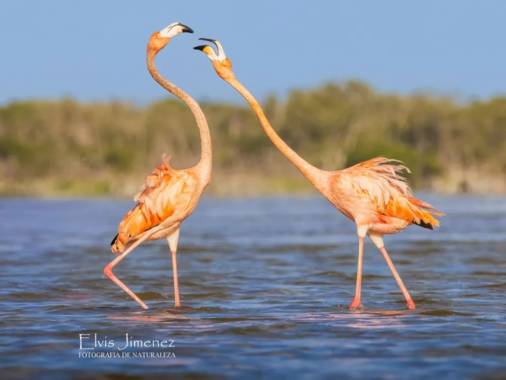
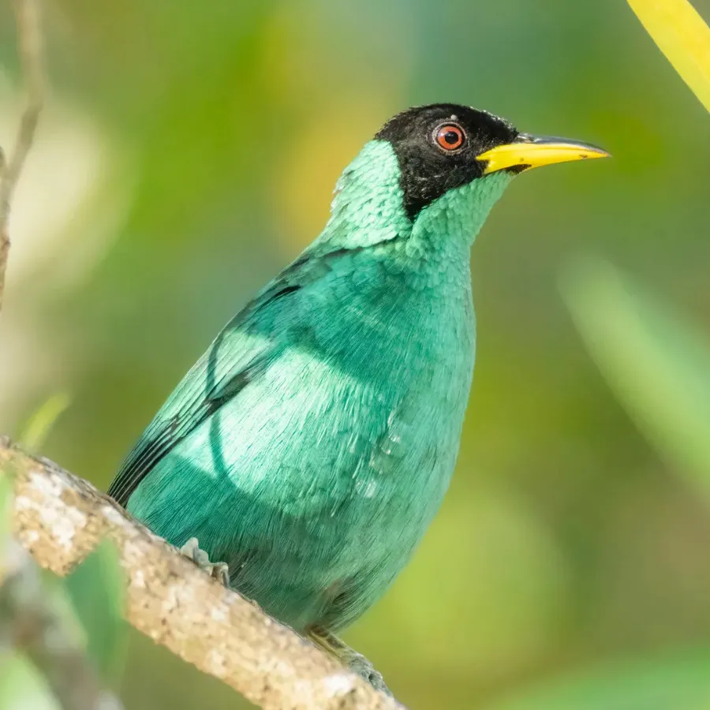

Aves · Naturaleza · Fotografía
Donde la Naturaleza se Revela
Cozumel, la Península de Yucatán y Chiapas, explorados a través de la mirada de Elvis.

01
Cozumel
Endémicas de la Isla
Vireo de Cozumel · Esmeralda de Cozumel · Salta pared de Cozumel
Cozumel es una isla marcada por el aislamiento, donde la selva resguarda especies que no existen en ningún otro lugar. Recorre su selva, costa y manglares en busca del Vireo de Cozumel, el Esmeralda de Cozumel y el Salta pared de Cozumel.
Con Elvis, la experiencia va más allá de buscar aves: se trata de leer el hábitat, escuchar sus sonidos y reconocer los lugares donde la isla revela su vida silvestre.
Según la ruta, el recorrido puede incluir paradas como Punta Sur Eco Park y El Cedral, entre otros puntos de la isla donde podemos encontrar otras especialidades de aves como la tángara cabeza rayada, el mosquero elaenia caribeño, el chipe manglero de Cozumel, la paloma corona blanca, la paloma caribeña, el vireo yucateco, el maullador negro y el carpintero yucateco.
Reservar por WhatsApp →
02
Yucatán
Península Tour
Phoenicopterus ruber
En los humedales de la Península de Yucatán, el agua, los manglares y los cielos abiertos crean un paisaje lleno de vida. El flamenco americano es una de sus grandes presencias, mientras los humedales revelan un mundo cambiante de movimiento, color y sonidos.
Explora lugares como Río Lagartos, Las Coloradas, Celestún y Chuburná, así como los alrededores de Valladolid, dependiendo de la ruta de cada salida.
La expedición por la Península de Yucatán también ofrece una enorme variedad de especies, incluyendo algunos endemismos como la chara yucateca, el pavo ocelado, la piranga yucateca, el granatelo yucateco, la codorniz yucateca y tres endemismos yucatecos: la matraca yucateca, la perlita yucateca y el colibrí tijereta mexicano.
Explora la noche en busca de especies crepusculares como el tecolote centroamericano, el tapacaminos yucateco y el chotacabras yucateco.
Reservar por WhatsApp →
03
Chiapas
Expedición de avistamiento de aves en Chiapas
Selva Lacandona – Nahá
En esta aventura de varios días, visitaremos varios lugares, incluida la Selva Lacandona, donde podremos encontrar excelentes especies de aves, como el mielero verde, la coqueta crestinegra, el carpintero castaño, el hormiguero de Alder, la eufonia elegante, el cacique de cabeza castaña, la tángara de collar carmesí y el vireón esmeralda, entre otras.
También iremos a zonas de mayor altitud alrededor de San Cristóbal para buscar aves extraordinarias, como el cenzontle azul y blanco, la chara unicolor, el momoto de garganta azul, el colibrí de montaña de garganta amatista, el colibrí de garganta granate, el impresionante chipe de cabeza rosada y uno de los colibríes más pequeños del mundo, el colibrí de garganta vinoso.
Una experiencia para quienes desean más tiempo en el campo, explorar distintos hábitats y disfrutar de la observación de aves con la libertad de dejar que el viaje se desarrolle a su propio ritmo.
Reservar por WhatsApp →Planea tu Visita
Formatos de Experiencia
Medio Día
5–6 horas para viajeros de crucero, estancias cortas o quienes desean descubrir la naturaleza y los paisajes de la región sin dedicar varios días al recorrido.
Tour de Varios Días
Para quienes desean más tiempo en el campo, los tours de varios días conectan diferentes paisajes y hábitats de la Península de Yucatán y Chiapas. En varios días es posible registrar una gran diversidad de especies.
Antes de Ir
Qué Esperar
La vida silvestre no sigue un horario.
Los avistamientos dependen de la temporada, el clima, el hábitat y el comportamiento de cada especie. Cada recorrido es una invitación a observar con calma, prestar atención y vivir el campo tal como se presenta.